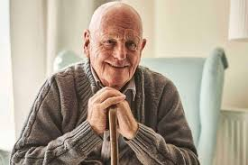
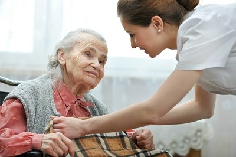
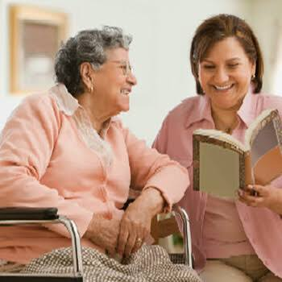
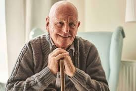
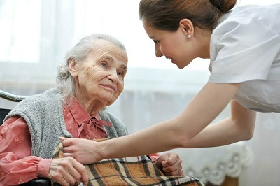
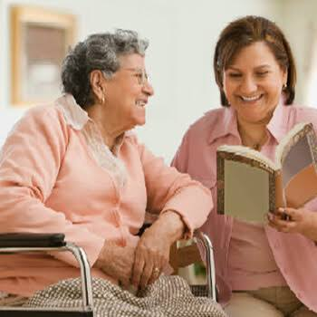

Instituições de Longa Permanência para Idosos
Oferecemos cuidado contínuo e especializado para idosos, garantindo não apenas a saúde física, mas também o bem-estar emocional e social de cada residente. Nosso foco vai além das necessidades básicas: buscamos criar um ambiente acolhedor, onde cada idoso se sinta respeitado, valorizado e integrado à comunidade.
Nossas instituições de longa permanência são projetadas para proporcionar conforto, segurança e cuidado em tempo integral. Contamos com uma equipe qualificada que monitora de perto as condições de saúde e as necessidades individuais. Além disso, promovemos atividades recreativas e sociais que estimulam a convivência, a autoestima e a autonomia dos idosos, incentivando um envelhecimento ativo e saudável.
Compreendemos que essa fase pode ser sensível para o idoso e sua família, por isso, oferecemos suporte emocional e psicológico, com acompanhamento médico regular e atenção personalizada, sempre respeitando suas histórias e individualidades. Nosso compromisso é garantir que vivam com dignidade, qualidade de vida e cercados de carinho e respeito.
 




